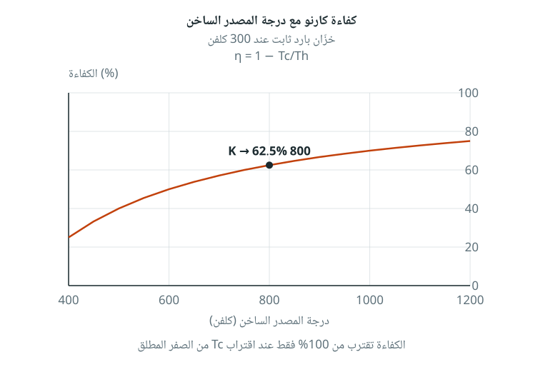

دورة كارنو
Carnot Cycle
دورة عكوسة من أربع خطوات بين خزّانين حراريين، تعطي أقصى كفاءة ممكنة 1 − Tc/Th لأي محرك يعمل بين الدرجتين، وهي حدّ نظري لا تصميم لمحرك.
دورة كارنو تتكون من خطوتين متساويتَي الحرارة وخطوتين كظومتين (بلا تبادل حراري): تمدد متساوي الحرارة عند Th مع سحب Q_h، تمدد كظوم يخفض الدرجة إلى Tc، انضغاط متساوي الحرارة عند Tc مع طرح Q_c، ثم انضغاط كظوم يعيد المائع إلى حالة البداية.
الخطوتان الكظومتان لا تتبادلان حرارة، لذلك كل التبادل الحراري يحدث عند درجتَي الخزّانين بلا فرق حراري — وهذا شرط العكوسية. على مخطط الحرارة–الإنتروبيا تظهر الدورة مستطيلًا، ومساحته هي الشغل الصافي. كفاءتها لا تعتمد على المائع العامل ولا على الضغوط ولا على الحجم، بل على الدرجتين فقط؛ ولهذا تصلح حدًّا أعلى لكل محرك يعمل بينهما.
كيف تعمل الظاهرة؟
في التمدد متساوي الحرارة يُسحب من الخزّان الساخن حرارة Q_h = Th·ΔS، فيبذل الغاز شغلًا ويتمدّد، وتبقى درجته ثابتة لأن الحرارة الداخلة تعوّض الطاقة المصروفة شغلًا. في التمدد الكظوم ينقطع التبادل الحراري، فينخفض الضغط والدرجة معًا حتى Tc، ولا تتغير إنتروبيا المائع.
ثم يُضغط الغاز عند Tc وتُطرح Q_c = Tc·ΔS، لأن الضغط عند درجة أعلى من المحيط يحتاج تبريدًا. وأخيرًا يُضغط كظوميًّا حتى Th، فتعود الحالة الأولى. الشغل الصافي هو (Th − Tc)·ΔS، والحرارة المسحوبة Th·ΔS، وبقسمتهما تظهر الكفاءة مستقلة عن المائع. العكوسية تفرض أن يحدث كل تبادل حراري بفرق درجة يقترب من الصفر، أي بزمن لانهائي.
العلاقة بالأرقام
الكفاءة η = 1 − Tc/Th بدرجات كلفن المطلقة. بين 800 و300 كلفن: η = 62.5%. بين 373 و293 كلفن، أي محرك يعمل بين بخار عند 100 °م ومحيط عند 20 °م: η = 21.4%، وهو حدّ يفسّر لماذا لا تتجاوز المحركات البخارية منخفضة الدرجة ربع الكفاءة.
ومحرك حقيقي يبلغ 40% بين 800 و300 كلفن يحقق 0.64 من حدّ كارنو، والباقي إنتروبيا مولّدة. لتحسين الكفاءة عمليًّا يُرفع Th أكثر مما يُخفَّض Tc، لأن η يتغير لوغاريتميًّا تقريبًا مع Tc وخطيًّا مع Th عند ثبات الفرق. أما بلوغ 100% فيستلزم Tc = 0 كلفن، أي −273.15 °م، وهو حدّ لا يُبلَغ عمليًّا.
مفاهيم متقاربة
الخلط الأول: اعتبار دورة كارنو تصميمًا لمحرك. هي حدّ أعلى عكوس لا نموذج قابل للبناء، لأن العكوسية تفرض انتقالًا حراريًّا بلا فرق درجة، أي قدرة صفرية. الخلط الثاني: مساواة كفاءة كارنو بمعامل الأداء؛ الكفاءة نسبة الشغل إلى الحرارة الساخنة ولا تتجاوز الواحد، ومعامل الأداء نسبة الحرارة المنقولة إلى الشغل ويتجاوز الواحد كثيرًا.
الخلط الثالث: اعتبار الحدّ نفسه لكل المحركات. الحدّ يخصّ المحركات الحرارية التي تعمل بين خزّانين؛ الخلايا الوقودية تحوّل الطاقة الكيميائية مباشرة، فمرجعها الطاقة الحرة لا حرارة الاحتراق، ويمكن أن تتجاوز كفاءتها حدّ كارنو المحسوب من درجة اللهب. والخلط الرابع: ظنّ أن المائع العامل يحدد الكفاءة؛ يحدد الشغل النوعي والحجم، لا النسبة.
حدود التطبيق
الدورة تفترض عكوسية تامة: بلا احتكاك، وبلا توصيل حراري عبر فرق محدود، وبتمدد وانضغاط متوازنَين. في محرك حقيقي تحدث كل هذه الفاقدات، ويُضاف إليها زمن الدورة: محرك يعمل بسرعة يبذل شغلًا أكبر لكنه يعمل بفرق درجة أكبر، فتقل كفاءته. الديناميكا الحرارية للزمن المحدود تعالج هذه المقايضة وتعطي كفاءة أعلى من الصفر وأقل من كارنو.
لا تنطبق الدورة على أنظمة لا يمكن فيها تعريف خزّانين حراريين، مثل التحويل الكهروضوئي أو الكهروحراري، ولا على العمليات التي تستمد الطاقة من فرق كيميائي مباشر. كما أن الحدّ يصبح غير ذي معنى عند درجات قريبة من الصفر المطلق لأن القدرة المتاحة تنهار وإن اقتربت الكفاءة من الواحد.

| الكمية | القيمة | المصدر |
|---|---|---|
| كفاءة كارنو بين 800 و300 كلفن | 62.5 % | [1] |
| كفاءة كارنو بين 373 و293 كلفن | 21.4 % | [1] |
| نسبة كفاءة محرك حقيقي 40% إلى حدّ كارنو 62.5% | 0.64 بلا وحدة | [1] |
| درجة الصفر المطلق | −273.15 °C | [2] |
المصادر
- 1 Heat Engines — OpenStax, University Physics Volume 2. openstax.org/books/university-physics-volume-2/pages/4-2-heat-engines · اطُّلع عليه 2026-11-16
- 2 Carnot Cycle — HyperPhysics, Georgia State University. hyperphysics.phy-astr.gsu.edu/hbase/thermo/carnot.html · اطُّلع عليه 2026-11-16
استشهد بهذا المصطلح
الصيغتان مبنيتان من بيانات الصفحة نفسها: العنوان والتاريخ ورابط النسخة المنشورة.
دورة كارنو — Carnot Cycle. (2026). ديوان المعرفة — انفراد. https://infiradev.com/diwan/terms/carnot-cycle.html
@misc{carnot-cycle2026,
title = {دورة كارنو},
titleaddon = {Carnot Cycle},
howpublished = {{ديوان المعرفة — انفراد} — مرجع علمي عربي},
year = {2026},
url = {https://infiradev.com/diwan/terms/carnot-cycle.html},
urldate = {2026-11-16},
note = {مراجعة علمية: مراجعة آلية — ديوان المعرفة (روابط المصادر + عقد المحتوى + وجود الرسم) 2026-11-16}
}
راجعه: مراجعة آلية — ديوان المعرفة (روابط المصادر + عقد المحتوى + وجود الرسم) 2026-11-16 · 2026-11-16 · آخر تحديث 2026-11-16